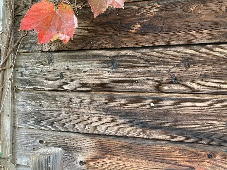
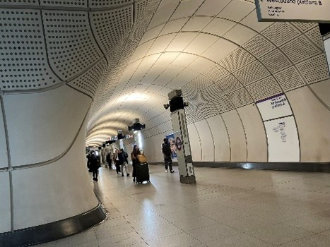
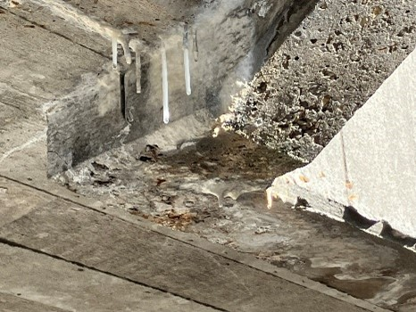

古賀研究室では、建築仕上げ材料を中心として、各種建築材料ならびに壁・床などの建築部位の性能に関する研究に取り組んでいます。
とりわけ、仕上げが建築物に及ぼす影響に着目し、外装の耐久性、建築空間の居住性、安全性などに関わる幅広い課題を対象としています。

古賀研究室では、建築仕上げ材料を中心として、各種建築材料ならびに壁・床などの建築部位の性能に関する研究に取り組んでいます。
とりわけ、仕上げが建築物に及ぼす影響に着目し、外装の耐久性、建築空間の居住性、安全性などに関わる幅広い課題を対象としています。
建築材料分野は、壁・屋根・床といった各部位の性能と品質を確保・向上させることを通じて、建築物の機能を支え、ひいては社会基盤の持続に寄与する重要な役割を担っています。多様な性能が求められる現代建築において、材料の特性を深く理解し、その可能性を追究することは、より良い建築環境の実現に不可欠です。


建築材料および建築仕上げに関する研究に意欲を持ち、主体的に探究に取り組む学生の参加を歓迎します。